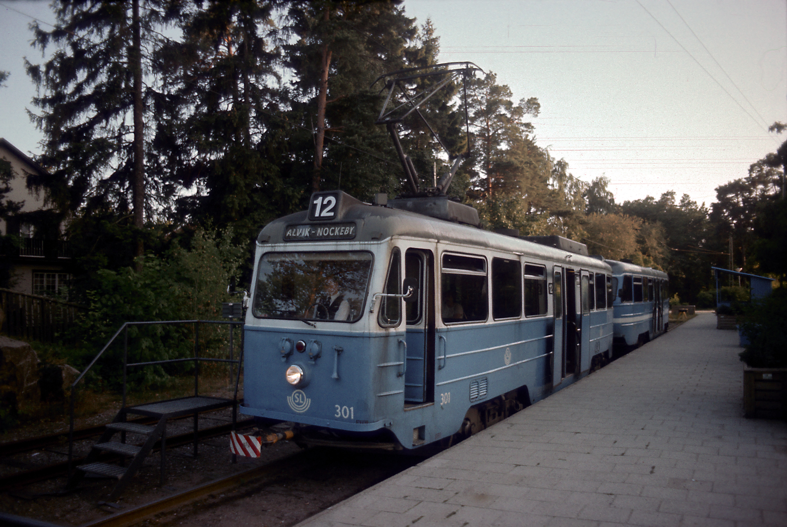

Bromma trädgårdsstad refers to the following five sought-after, leafy villa areas in western Stockholm that grew up from the 1910s onwards:
The areas are known for their idyllic gardens, proximity to Lake Mälaren and good communications via Nockebybanan (Tram line 12). Please click on any of the areas above for more information.
